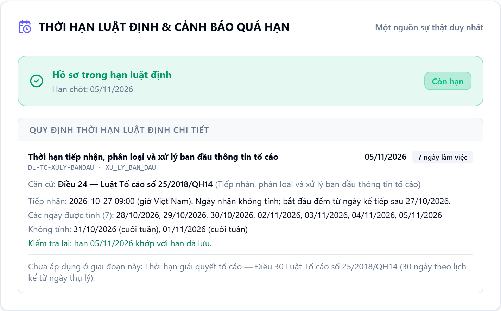

Pháp Dẫn (LegalFlow) được thiết kế để giúp UBND xã, phường phân luồng đơn khiếu nại, tố cáo, theo dõi từng hạn luật định, và đối chiếu mọi căn cứ AI gợi ý với kho văn bản trước khi cán bộ dùng. Dự án đang thử nghiệm với dữ liệu mẫu.
Video giới thiệu sẽ được bổ sung trên trang này.
Đơn thư trễ hạn thường không vì thiếu luật, mà vì hạn không hiện ra trước mắt người xử lý.
Pháp Dẫn được thiết kế để đặt hạn, người chịu trách nhiệm và căn cứ của mỗi hồ sơ lên cùng một màn hình, để lãnh đạo và cán bộ cùng nhìn thấy một bức tranh.
Trong thiết kế của Pháp Dẫn, mỗi chặng có người giữ hồ sơ và một hạn rõ ràng. Trạng thái mỗi chặng ghi bằng chữ; màu chỉ để nhìn nhanh.
Cán bộ tiếp dân ghi đơn, cấp mã hồ sơ.
Đã xong, đúng hạnXác định loại đơn và người chịu trách nhiệm.
Đã xong, đúng hạnLãnh đạo giao việc, hạn giải quyết bắt đầu chạy.
Đang xử lýHôm nay: còn 2 ngày đến hạn
Chuyên viên làm việc với các bên, thu thập tài liệu.
Chưa đếnDự thảo qua Khóa trích dẫn, lãnh đạo ký ban hành.
Chưa đến
Cách làm việc giữ nguyên. Thứ thay đổi là những gì cán bộ nhìn thấy mà không phải đi hỏi.
Sổ giấy: Ghi trong sổ, phải lật lại mới nhớ.
Pháp Dẫn: Tính sẵn theo ngày làm việc cho đơn khiếu nại, tố cáo, hiện căn cứ và từng ngày được tính. Loại đơn chưa có quy tắc tính hạn thì hệ thống không tự đặt ngày.
Sổ giấy: Hỏi trực tiếp người được giao.
Pháp Dẫn: Ghi người giữ hồ sơ và thời điểm chuyển ở từng chặng.
Sổ giấy: Tra tay, dễ dẫn văn bản đã hết hiệu lực.
Pháp Dẫn: Đối chiếu với kho văn bản theo đúng ngày đang xét.
Mô hình ngôn ngữ có thể viết ra một điều luật nghe rất đúng mà không hề tồn tại. Trên bản thử nghiệm, Khóa trích dẫn chặn việc đó: mỗi căn cứ được tra trong kho văn bản, theo đúng số điều, đúng văn bản và đúng thời điểm áp dụng.
Tiếp nhận, phân loại, giao việc, theo dõi đến khi đóng hồ sơ.
Đang thử nghiệmTính hạn luật định, tra căn cứ, Khóa trích dẫn, gợi ý dự thảo.
Đang thử nghiệmBài tập tình huống để cán bộ mới luyện cách lập luận và dẫn căn cứ.
Đang thử nghiệmAI học từ những ca đã được chuyên gia thẩm định, không học từ hồ sơ thật của người dân.
Lộ trìnhPháp Dẫn đang thử nghiệm với hồ sơ mẫu, chưa dùng hồ sơ thật của công dân. Chính sách xử lý dữ liệu của ứng dụng sẽ được công bố trước khi mở dùng thử.
Dữ liệu tách theo đơn vị, quyền xem và sửa theo vai trò của từng cán bộ.
Email, số điện thoại, số định danh được lọc bỏ. Ẩn họ tên sẽ áp dụng cho toàn bộ luồng AI trước khi bật AI đám mây.
Việc tạo, sửa, chuyển và đóng hồ sơ đều được ghi lại: ai làm, lúc nào.
Trong giai đoạn thử nghiệm, hồ sơ mẫu chỉ đọc và không gửi dữ liệu ra ngoài.
Pháp Dẫn đang trong giai đoạn thử nghiệm với dữ liệu mẫu. Cơ quan, tổ chức quan tâm có thể liên hệ để trao đổi.
Video giới thiệu sẽ được bổ sung trên trang này.